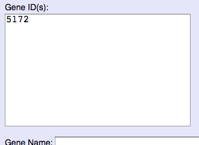
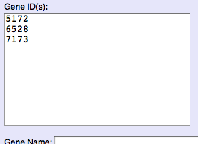
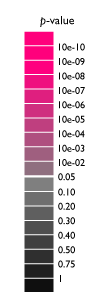
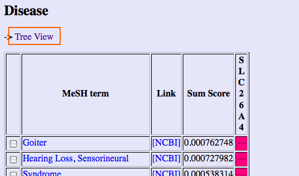

Gendoo (Gene, desease features ontology-based overview system) は、 遺伝子や疾患について、関連する疾患や薬剤、生命現象、臓器などの情報を キーワードで表示するシステムです。
Gendooでは、キーワードとして、MeSHを用いています。 （Gene Ontologyの語も近日対応予定です）
入力としては以下を受け付けます。
すると、関連する語が表示されます。
Gendooは、「High-scoring list（ランキングリスト）」と 「Hierarchical-tree view（階層構造表示）」の 2つの結果画面があります。初期画面は「High-scoring list」です。


遺伝子名や疾患名を入力とした場合、目的の遺伝子や疾患がどのエントリなのか 選択する画面が出ます。目的のものを選択することで、関連する語が 表示されます。

キーワードを入力とした場合は、関連する遺伝子と疾患のリストが出ます。 この場合、Hierarchical-tree viewはありません。
まとめると以下のようになります。

Gene ID ならGene ID(s)欄に、OMIM IDならOMIM ID(s)欄にIDを入力します。
複数のIDを入力するときは、ID欄に1行1 IDで入力してください。
ID を入力したら、Searchボタンをクリックします。

結果が表示されます。（high-scoring list [ランキングリスト]）
関連度は、p-valueにより 背景色を変えて示しています。 複数のスコアを勘案するときのために、情報利得 (information gain) でも スコアリングしていますが、参考程度でよいかと思います。 （蛇足ですが、情報利得は0〜1の間の数値をとり、大きい方が有意です）
関連度のセルにマウスオーバーすることにより、情報利得と p-valueの値が確認できます。

MeSH は階層構造をとっています。”Tree view” をクリックすることにより 階層構造表示（hierarchical-tree view）で結果を表示します。
階層構造表示で結果が表示されます。
High-scoring List をクリックすることにより、 hish-scoring list（ランキングリスト）表示に戻ります。